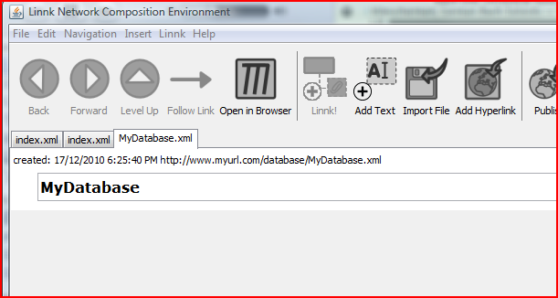

Please see the previous tutorial to learn how to
If you have opened a document XML file using File / Open, it should appear as a browser tab (Note that you can open multiple Linnk documents at the same time using multiple tabs).

There are multiple ways for you to edit a document in Linnk. You can explore each of these ways by following the links below: